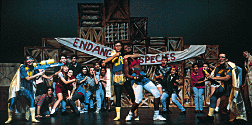
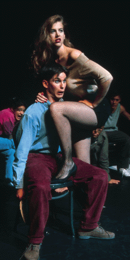

 The plot of Gaieties, although different every year, usually involves making fun of our arch-rivals across the Bay, the University of California at Berkeley, also known as CAL. Cal students are also known as Weenies. In the opening of The Last Axe Hero, shown above, three confused Cal Terrorists (Lori Ginsburg '95, John "Flippy" Lucero '95, and Vance Vanier '95) sporting waterguns, swimming goggles, and bright blue and gold leotards attack Stanford Axe-Keeper Nitro (Atim Udoffia '95) at the annual bonfire-building rally and begin making unreasonable demands. Although Cal narrowly edged out Stanford in the subsequent Big Game, the none-too-bright Cal Terrorists returned in the opening of the following Gaieties, unaware that the Axe was already at Berkeley.

"I've never teated on a chest before... I mean cheated on a test!!"
In the photograph to the right, Sexy Cal villainess Stacy Campanile (Kristen Meinhold '95) seduces new Axe-Keeper David Hasseldorf (Brennan Carlson '96).
Much to Kristen's dismay, this photograph has graced the pages of just about every Stanford Daily article about Ram's Head since it was taken. And now it graces our web pages too! (Don't kill me Kristen, Adrian wanted me to put it here! I mean, it is pretty good publicity, you have to admit.)
Since Stanford is on the quarter system, there are usually only five weeks of classes in the fall before the Big Game. Although the script and most of the music for Big Game Gaieties is completed over the previous summer, that still leaves only one week for publicity and auditions and five weeks of rehearsals for a full-length original musical production.
Still, the energy and enthusiasm of the cast and crew somehow always brings it together in time, even if it means rehearsing in parking lots, "borrowing" props from public places, or wearing less clothing on stage than one is truly comfortable with.